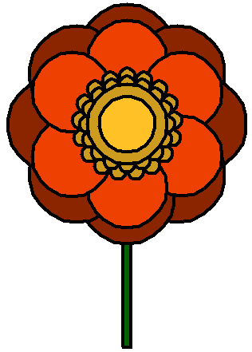

The Main Focus of this Lab
- In this lab, you focus on:
- creating a menu system
- using loops, loops inside loops
- (handling input, using variables, converting types of data, comparisons)
What You Will Learn in This Lab
- In this lab, you will gain experience in the following areas:
Topic Computer Science/ Programming Concept Making decisions Writing If statements ( if ... elif ... else ...)Getting text input Using input()to read text inputData conversion Converting any value to an integer with int()Converting any value to a string with str()Repeating things using loops Using while loops ( while ...)Building nested loops, i.e. a loop inside another loop Using for loops ( for ...)Using a list with a for loop Using the turtle graphics module Drawing shapes by moving the turtle around Using named colours Drawing filled shapes using turtle.begin_fill()andturtle.end_fill()Drawing circles using turtle.circle()Drawing solid circles using turtle.dot()
Overview
- In this session, you will create a simple artist sketchbook using Python turtle graphics code
Lab Content
- 1. Understanding the program interface
- 1.1. Getting started
- 1.2. Running the starting code
- 1.3. The program interface
- 2. Handling the options
- 2.1. Moving the turtle – m
- 2.2. Rotating the turtle – t
- 2.3. Drawing a line – l
- 2.4. Drawing a rectangle – r
- 2.5. Drawing a circle – c
- 2.6. Changing the colour
- 2.7. Using a loop inside a loop
- 2.8. Another example of a loop inside a loop
- 2.9. Drawing the author's information ‐ a
- 2.10. Quitting the program ‐ q
- 2.11. Testing the program
- 3. Examples of using the Sketchbook program
- Submission
Lab Procedures
1. Understanding the program interface
Video for Part 1
1.1. Getting started
- A template file (sketchbook.py) is given to you as a starting point
- Right click on the link, select
Save Target As. Do not open it in the browser and copy - We will use IDLE to make this lab
1.2. Running the starting code
- After you download the starting code, you can run it using IDLE
- You can open the starting code in IDLE by selecting
File -> Open - Then you can run the starting code by selecting
Run -> Run Moduleor by pressing F5
1.3. The program interface
- After running the code, you shall see an empty turtle graphics window with a turtle in the center, which looks like this:
- In addition, you shall see a menu displayed in the Python shell like this:
Welcome to the Python Sketchbook! Please choose one of the following options: m - Move the turtle t - Rotate the turtle l - Draw a line r - Draw a rectangle c - Draw a circle p - Change the pen colour of the turtle f - Change the fill colour of the turtle q - Quit the program Please enter your option: - In this menu, you can enter one of the options (i.e. m/t/l/r/c/p/f/q) and then press the
Enterkey - For example, entering the option q will quit the program
- In the starting code given to you, you can already use the options m (move), l (line) and q (quit)
- To make the program work for other options, you need to add appropriate code
2. Handling the options
2.1. Moving the turtle – m
Video for Part 2.1
- This option has been done for you
- You can move the turtle without drawing anything by entering the m option and specifying the x and y values
- An example of the move option is shown below:
- Entering the option
Welcome to the Python Sketchbook! Please choose one of the following options: m - Move the turtle t - Rotate the turtle l - Draw a line r - Draw a rectangle c - Draw a circle p - Change the pen colour of the turtle f - Change the fill colour of the turtle q - Quit the program Please enter your option: m Please enter the x value: 30 Please enter the y value: 60
- The turtle window output
The turtle before moving
The turtle is at (30, 60) after moving
- Entering the option
- The Python code for this option has been given to you in the starting code, which looks like this:
##### Handle the move option if option == "m": print() # Ask the user for the x and y value x = input("Please enter the x value: ") x = int(x) y = input("Please enter the y value: ") y = int(y) # Move the turtle without drawing anything turtle.up() turtle.goto(x, y) turtle.down() - The content of the
ifstatement is executed when the entered option is m, i.e. the move option - Inside the
ifstatement, the code first asks for the x and y values of the destination - One important thing you can see is that the
int()function is being used - Whatever value received from
input()is a piece of text, or what we call astring - However, when you want to move the turtle, you must give the turtle two integer numbers
- Therefore, the function
int()is used twice to convert the string into an integer - Once you have got the x and y values, you can use
turtle.goto()function to move the turtle to the corresponding position turtle.up()is used before callingturtle.goto()to ensure the turtle moves without drawing anything on the way- After
turtle.goto(),turtle.down()is used to tell the turtle to put the pen down again
2.2. Rotating the turtle – t
Video for Part 2.2
- You can rotate the turtle by entering the t option and specifying the angle of rotation
- This option is incomplete in the starting code, you have to add appropriate lines of code
- An example of the rotate option is shown below:
- Entering the option
Welcome to the Python Sketchbook! Please choose one of the following options: m - Move the turtle t - Rotate the turtle l - Draw a line r - Draw a rectangle c - Draw a circle p - Change the pen colour of the turtle f - Change the fill colour of the turtle q - Quit the program Please enter your option: t Please enter the angle of rotation: 60
- The turtle window output
The turtle before rotation
The turtle rotates 60 degrees in an anti-clockwise direction
- Entering the option
- To complete this option you need to look for the
ifstatement for handling the t option, which looks like this:##### Handle the rotate option if option == "t": print() # # Please put your code here # - Inside the
ifstatement you need to do the following steps:- Ask for the rotation angle using the
input()function - Convert the string returned by the
input()function to an integer - Similar to the move (m) option, you can use
int()function to convert the string to integer - Rotate the turtle by the converted integer number using either
turtle.left()orturtle.right() - In the example shown above, the turtle rotates left, and hence
turtle.left()will be used to rotate the turtle
- Ask for the rotation angle using the
- Unlike option m, you do not need to use
turtle.up()orturtle.down()
2.3. Drawing a line – l
Video for Part 2.3
- You can draw a line by entering the option l and specifying the target position, i.e. x and y coordinates(values).
- This option has been done for you
- An example of the line option is shown below:
- Entering the option
Welcome to the Python Sketchbook! Please choose one of the following options: m - Move the turtle t - Rotate the turtle l - Draw a line r - Draw a rectangle c - Draw a circle p - Change the pen colour of the turtle f - Change the fill colour of the turtle q - Quit the program Please enter your option: l Please enter the x value: 30 Please enter the y value: 60
- The turtle window output
The turtle before drawing a line
The turtle draws a line from the initial position to (30, 60) and stays there
- Entering the option
- The code of the line option has been given in the starting code, which looks like this:
##### Handle the line option if option == "l": print() # Ask the user for the x and y value x = input("Please enter the x value: ") x = int(x) y = input("Please enter the y value: ") y = int(y) # Move the turtle and draw a line turtle.goto(x, y) - The above code is very similar to the one for the move(m) option
- The difference between the two options is that the line option does not need to lift the pen up and then put the pen down
- Therefore, it does not need to use
turtle.up()orturtle.down() - A line will be drawn when we move the turtle with
turtle.goto()
2.4. Drawing a rectangle – r
Video for Part 2.4
- You can draw a rectangle by entering the option r and specifying the width and the height of the rectangle
- This option is incomplete in the starting code, you have to add appropriate lines of code to complete it
- An example of the rectangle option is shown below:
- Entering the option
Welcome to the Python Sketchbook! Please choose one of the following options: m - Move the turtle t - Rotate the turtle l - Draw a line r - Draw a rectangle c - Draw a circle p - Change the pen colour of the turtle f - Change the fill colour of the turtle q - Quit the program Please enter your option: r Please enter the width of the rectangle: 80 Please enter the height of the rectangle: 50
- The turtle window output
The turtle before drawing a rectangle
The turtle draws a rectangle with a size of 80 x 50
- Entering the option
- To complete this option you need to look for the
ifstatement for handling the r option, which looks like this:##### Handle the rectangle option if option == "r": print() # # Please put your code here # - Before drawing, you need to ask for the width and height of the rectangle
- You can again use the
input()function - Then you have to convert the width and height from text to integer numbers
- As shown in the above example image, the rectangle is drawn next to the turtle
- You need to use the correct combination of
turtle.forward()andturtle.left()orturtle.right()to draw the rectangle - After drawing the rectangle, your turtle should go back to the same position as before
2.5. Drawing a circle – c
Video for Part 2.5
- You can draw a circle by entering the option c and specifying the radius of the circle
- This option is incomplete in the starting code, you need to add appropriate lines of code
- An example of the circle option is shown below:
- Entering the option
Welcome to the Python Sketchbook! Please choose one of the following options: m - Move the turtle t - Rotate the turtle l - Draw a line r - Draw a rectangle c - Draw a circle p - Change the pen colour of the turtle f - Change the fill colour of the turtle q - Quit the program Please enter your option: c Please enter the radius of the circle: 40
- The turtle window output
The turtle before drawing a circle
The turtle draws a circle with a radius of 40
- Entering the option
- To complete this option you need to look for the
ifstatement for handling the c option, which looks like this:##### Handle the circle option if option == "c": print() # # Please put your code here # - Similarly, you need to ask for the radius of the circle before drawing
- That means you need to use the
input()function to get the radius and theint()function to convert it into an integer number - As seen in the example image, the circle option asks the turtle to draw a circle above it
- This can be done using
turtle.circle() - Note that the initial position of the turtle is not the centre of the circle, but a point on the circumference
- After completing the circle, the turtle will go back to its initial position
2.6. Changing the colour
2.6.1 Changing the pen colour – p
Video for Part 2.6.1
- It is always good to draw with colours
- Using the p option, you can change the pen colour of the turtle
- An example of the pen colour option is shown below:
- Entering the option
Welcome to the Python Sketchbook! Please choose one of the following options: m - Move the turtle t - Rotate the turtle l - Draw a line r - Draw a rectangle c - Draw a circle p - Change the pen colour of the turtle f - Change the fill colour of the turtle q - Quit the program Please enter your option: p Please enter a colour name for the pen colour: red
- The turtle window output
The turtle before changing pen colour
The turtle changes to an arrow with a red outline (the pen colour) - Draw a line using the new colour
The turtle's pen colour is now red
Using the line option the turtle draws a red line from (0, 0) to (80, 80)
- Entering the option
- To complete this code, you need to look for the
ifstatement for handling the p option:##### Handle the pen colour option if option == "p": print() # # Please put your code here # - In the
ifstatement, you need to ask the user for the name of the pen colour - Then you use
turtle.pencolor()to set the new pen colour - If the user enters a colour which does not exist, Python will display an error like this:
- A list of colours you can use is shown here: The Names of All Python Turtle Graphics Colours
2.6.2 Changing the fill colour – f
Video for Part 2.6.2
- Here are two images, one is a hollow circle and another is a filled one:
A Hollow Circle A Filled Circle - For both of the above images, the lines were drawn first, then the circle
- In the left image you can see the lines, because the circle was not drawn with
begin_fill() ... end_fill() - In the right image you can't see the lines, because the circle was drawn with
begin_fill() ... end_fill()
- In the left image you can see the lines, because the circle was not drawn with
- At this moment, the sketchbook can only be used to draw hollow shapes
- But your image will look more interesting if the shapes are filled
- We have a variable
fillcolorto store the fill colour - It is by default set as
"black" - You can change the fill colour by entering the option f and specifying the colour name
- The option is incomplete, you have to add appropriate lines of code
- An example of the fill colour option is shown below:
- Entering the option
Welcome to the Python Sketchbook! Please choose one of the following options: m - Move the turtle t - Rotate the turtle l - Draw a line r - Draw a rectangle c - Draw a circle p - Change the pen colour of the turtle f - Change the fill colour of the turtle q - Quit the program Please enter your option: f Please enter a colour name for the fill colour: red
- The turtle window output
The turtle before changing pen colour
The turtle changes to an arrow filled with red colour - Draw a circle using the new fill colour
The turtle will now fill shapes with red colour
Using the circle option to draw a circle with radius of 40
- Entering the option
- To complete this option, you need to do the followings:
- Complete the
ifstatement of the fill colour (f) option:##### Handle the fill colour option if option == "f": print() # # Please put your code here #- You need to ask the user for the name of the fill colour and then change it using
turtle.fillcolor()
- You need to ask the user for the name of the fill colour and then change it using
- Add
turtle.begin_fill()andturtle.end_fill()to fill the shapes with colours:- Recall that to draw a filled circle:
turtle.begin_fill() turtle.circle(50) turtle.end_fill()
- Recall that to draw a filled circle:
- Complete the
- Then after changing the fill colour, every shape you draw will be filled with that new colour
2.7. Using a loop inside a loop
- This part is not shown in any of the lab videos but this part is one of the requirements for your lab assignment
- You can draw more complex shapes using a nested loop (also called an embedded loop)
- For example, you can generate a flower pattern like this:
- You will need to add an additional menu entry for this improvement:
Welcome to the Python Sketchbook! Please choose one of the following options: m - Move the turtle t - Rotate the turtle l - Draw a line r - Draw a rectangle c - Draw a circle p - Change the pen colour of the turtle f - Change the fill colour of the turtle g - Draw a generated flower ⇦ new option here! q - Quit the program Please enter your option: g Please enter the size of the flower petal: 70
- Then you have to extend the code yourself
- The flower pattern shown above is composed of this basic shape - a triangle:
- One triangle can be drawn like this:
Repeat 3 times : Draw a side Rotate the turtle left by 120 degrees - Then the flower is created by drawing the triangle shape in a circular pattern 12 times
- To achieve that, you can embed the above loop in another loop, like this:
Outer loop: repeat 12 times for drawing 12 basic shapes : Inner loop: Repeat 3 times : Draw a side Rotate the turtle left by 120 degrees Rotate the turtle left by 30 degrees - For the lab assignment, we would like to focus on the flower drawing
- DON'T use any turtle.begin_fill() and turtle.end_fill() in this part
2.8. Another example of using a loop inside a loop
Video for Part 2.8
- Let's try to generate an 'explosion' using nested loops
- You will need to add another additional menu entry for this improvement:
Welcome to the Python Sketchbook! Please choose one of the following options: m - Move the turtle t - Rotate the turtle l - Draw a line r - Draw a rectangle c - Draw a circle p - Change the pen colour of the turtle f - Change the fill colour of the turtle g - Draw a generated flower e - Draw a generated explosion ⇦ new option here! q - Quit the program Please enter your option: e Please enter the size of the explosion (>150): 200
- To draw circles in turtle, you can use
turtle.circle() - Another possible command is
turtle.dot() - There are some difference between the two:
turtle.dot()takes the diameter as parameterturtle.dot()makes a solid circle coloured with the pen colorturtle.dot()draws the circle center at the turtle position
- Using a
forloop, we can easily go through each color in a list, like this:for thiscolor in ["sienna", "brown", \ "red", "dark orange", "orange","gold2", "gold", "yellow"]: turtle.color(thiscolor)- \ simply means that the line of code is continued on the following line
- Let's generate different dots of decreasing size and different colours:
Ask user for the desired size for each colour in list change the pen colour draw a dot decrease the size - A list of colours you can use is shown here: The Names of All Python Turtle Graphics Colours
- Some of the colours have a series of values
- For example, there is yellow1, yellow2, yellow3, and yellow4
- Similarly, there is green1, green2, green3 and green4
- And there is LightBlue1, LightBlue2, LightBlue3, LightBlue4
- Quite a lot of the colours have 4 variations like this (look at the page of colours)
- With some clever code you can use these series of values so the effect is more dramatic, like this:
Outer loop: for each colour e.g. ["yellow", "green", "LightBlue"] Inner for loop (4 times, generating the numbers 1..4): build some text which is the colour name followed by the number e.g. "yellow" + str(3) combines "yellow" and "3" to produce "yellow3" set the turtle colour to the text you have just built draw a dot with an appropriate size decrease the size (e.g. by 10) str()is used to convert a number into text, which is called a 'string'- The following explosion effect uses a series of MediumPurple, OrangeRed, goldenRod and yellow colours
- In other words, the colours used are: MediumPurple1, MediumPurple2, MediumPurple3, MediumPurple4, OrangeRed1, OrangeRed2, and so on
- If the size is decreased by 10 in every step, to avoid a negative-size dot you need to warn the user that the size should not be smaller than 4 (number of colours) × 4 (number of levels) × 10 = 160
- Before you generate the explosion, if you want to you could first increase the speed for a smooth animation
- Note that since we have changed the pen colour in the loops, you can change the pen colour after the drawing is done
- Otherwise the user may get confused later because subsequent drawing commands will be shown in the same colour as the innermost circle!
- You can do it by
...store the old value of the pencolor... ...store the old value of the fillcolor... ...code for explosion... ...restore the old value of the pencolor... ...restore the old value of the fillcolor...
- To get the current pen colour, you can do like this
...a variable storing the pen color... = turtle.pencolor()
...a variable storing the fill color... = turtle.fillcolor()
fillcolor, so you can always refer to the variable fillcolor to restore the original fill colour- You can help to improve the program by writing a while loop to check the range of the size, but it is not required
2.9. Drawing the author's information – a
- This part is not shown in any of the lab videos but this part is one of the requirements for your lab assignment
- You have to extend the program so that your surname (last name) is drawn using turtle graphics when the user enters the "a" option
- Add another additional menu entry 'a' for this improvement:
Welcome to the Python Sketchbook! Please choose one of the following options: m - Move the turtle t - Rotate the turtle l - Draw a line r - Draw a rectangle c - Draw a circle p - Change the pen colour of the turtle f - Change the fill colour of the turtle g - Draw a generated flower e - Draw a generated explosion a - Draw the author's information ⇦ new option here! q - Quit the program Please enter your option: a
- For example, if your student name is CHAN, Tai Man, then your program draws CHAN in the turtle window
- If you find drawing your surname hard, you can choose to draw your last nickname or short version of your name
- For example, if your name is CHAN, Tai Man, then your program draws CTM in the turtle window
- For example, if your nickname is Elon, then your program draws Elon in the turtle window
- It has to be at least 3 characters
- You can use any way that can produce the name in the turtle window
- However, you cannot use
turtle.write()orprint()to finish the task- You have to draw the name using turtle graphics in a creative way
- Here is a page showing some example results of drawing your name
- Your drawing needs to be readable - pretty drawings will not get extra points
2.10. Quitting the program – q
- You can quit the program by entering the q option
- You don't need to write any code for this option
- This operation has been cleverly handled, like this:
while option != "q": ... - This means that the main menu, which is written inside the while loop, will be repeatedly displayed as long as the option is not "q"
- In other words, the main menu will stop being displayed, if the option is "q"
2.11. Testing the program
Video for Part 2.10 - 2.11
-
Note: The video does not cover Section 2.7 to 2.9.
- No matter what program you write, you should carefully check that it works correctly
- To test the program in this lab, you may first make a sketch:
- Then translate it into special commands that your program needs, which will be like this ('↵' represents the "Enter" or "return" key):
m ↵ 0 ↵ -75 ↵ f ↵ sandybrown ↵ c ↵ 75 ↵ m ↵ 0 ↵ -25 ↵ f ↵ firebrick1 ↵ c ↵ 20 ↵ m ↵ -2 ↵ -2 ↵ p ↵ white ↵ f ↵ white ↵ t ↵ 5 ↵ r ↵ 9 ↵ 9 ↵ t ↵ -5 ↵ m ↵ -22 ↵ 12 ↵ p ↵ black ↵ f ↵ black ↵ c ↵ 9 ↵ m ↵ 22 ↵ 12 ↵ c ↵ 9 ↵ m ↵ -32 ↵ -22 ↵ l ↵ -15 ↵ -32 ↵ l ↵ 15 ↵ -32 ↵ l ↵ 32 ↵ -22 ↵
- Note that each line above is drawing a separate visual component
- Input these to your program and see if you can achieve a similar drawing to the sketch
3. Examples of using the Sketchbook program
- Here are some example images created by the program:
- Anpanman
- Here is an example image of Anpanman (see Wikipedia):
- When you run your program you can copy and paste this text, it will produce this Anpanman
- You don't have to type in every single line yourself, just copy and paste all the text and you will see the finished drawing
- Here is a step-by-step video showing how the above file creates the drawing this Anpanman
- Here is an example image of Anpanman (see Wikipedia):
- A flower
- Here is a flower drawn mainly using circles:
 - When you run your program you can copy and paste this text, it will produce this flower
- You don't have to type in every single line yourself, just copy and paste all the text and you will see the finished drawing
- Here is a step-by-step video showing how the above file creates the drawing this flower (by copying and pasting all the text)
- Here is a flower drawn mainly using circles:
- Anpanman
Submission
- You don't need to submit this work
- However, it's a good idea to keep a copy of your work for your own reference
- For example, you can put your file in your USB disk (if you have one) or email a copy to yourself